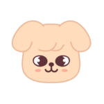

📒 Index · all subjects
William's Correction Notes William 訂正筆記總目錄

You're back! Yay!你回來啦！太好了！
Puppy MEvery homework you fix becomes one page in this notebook. Tap a card to open that lesson. 每一次訂正的作業都是這本筆記的一頁。點卡片就能打開那一課。
0lessons 課
0subjects 科目
0spots to beat 個要打的